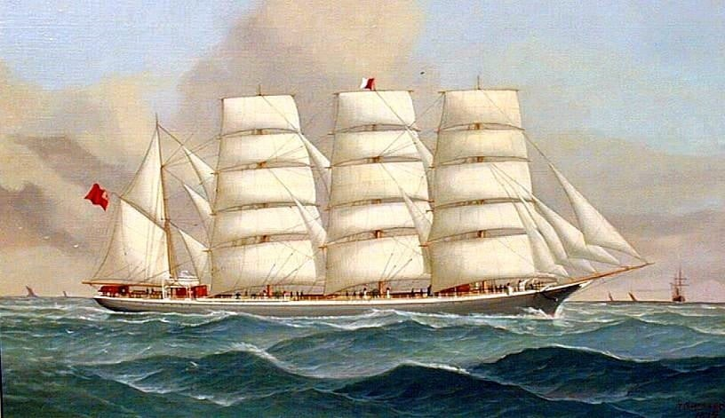
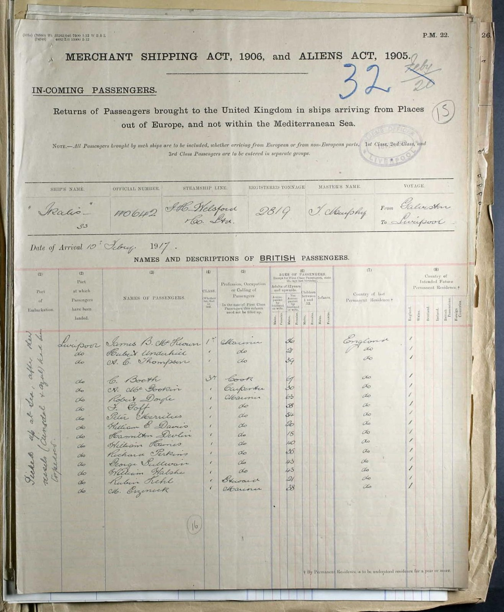
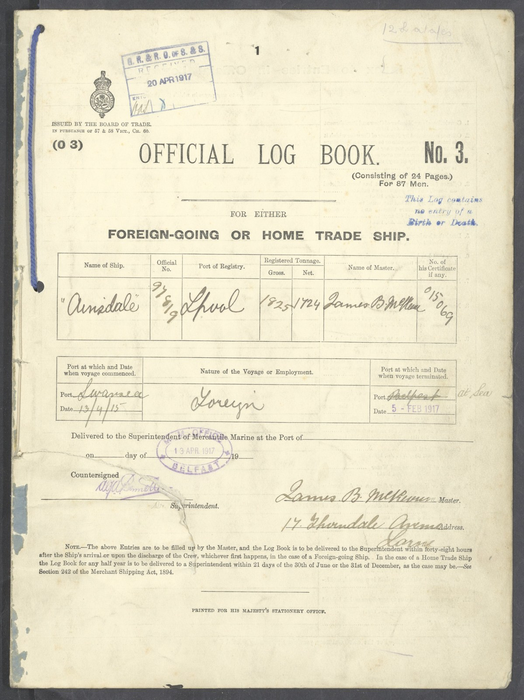
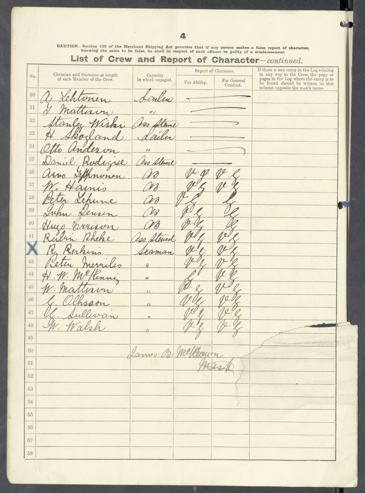
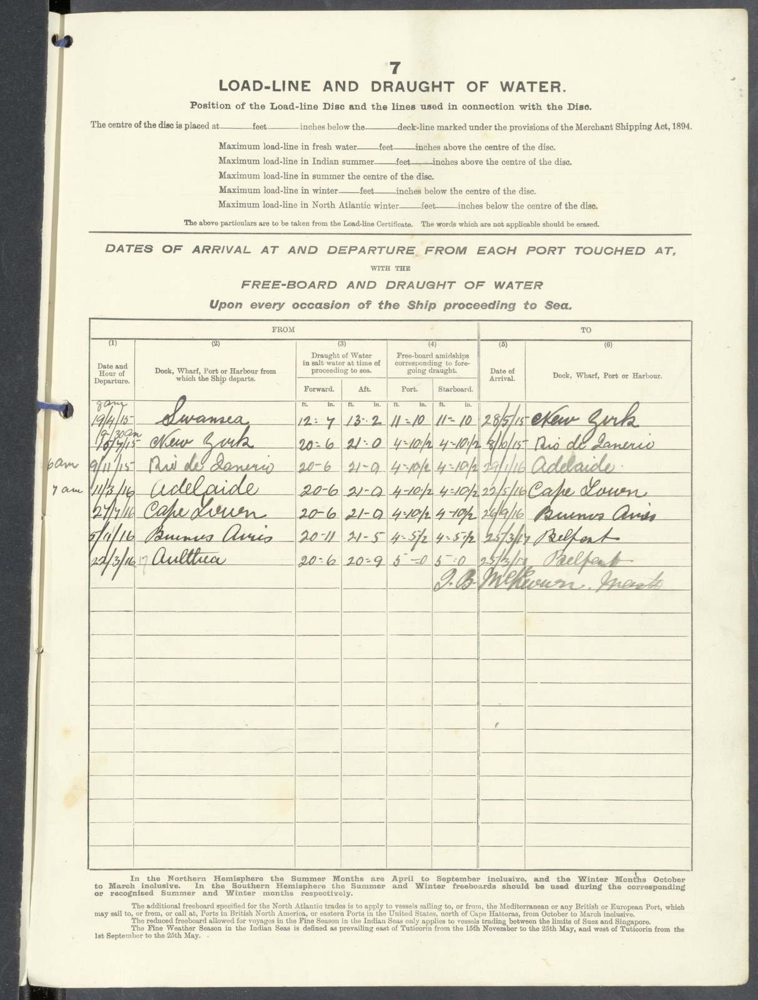

The Clipper Routes
Across the world under sail
For men like Peter Merrilees, the oceans between Britain and Australasia were working routes. They carried passengers seeking new lives, manufactured goods for growing settlements, and cargoes of wool and grain for the journey home.
These passages demanded skill, endurance and a close understanding of wind and weather. They also became the setting for celebrated rivalries between sailing ships.
Following the wind
The fastest route was not always the shortest line on a map. Sailing ships depended on the prevailing winds, shaping their voyages around the great wind systems of the world.
Outward-bound ships sailed south through the Atlantic before turning east, passing far south of the Cape of Good Hope. Here they sought the Roaring Forties—the powerful westerly winds that could drive them across the Indian Ocean towards Australia and New Zealand.
Many homeward voyages continued east across the Pacific and around Cape Horn, before turning north into the Atlantic. Together, the outward and return passages could take a ship right around the world.
The winds that made these routes fast also made them dangerous. Far to the south lay mountainous seas, sudden storms and drifting icebergs.

The barque Bermuda. Painting by John Henry Mohrmann (1857–1916). Public domain.
The wool races
Some of the best-known clippers began their careers carrying tea from China. When the Suez Canal opened in 1869, steamships gained a shorter route that sailing vessels could not use as effectively. Ships such as Cutty Sark eventually found new work in the Australian wool trade.
Fast passages brought commercial advantages and enhanced the reputations of ships and captains. Newspapers followed their progress, and crews took pride in beating a rival home. These were usually competing commercial voyages rather than organised races with a common starting gun.
Scotland had a strong place in this story. Cutty Sark was built at Dumbarton in 1869, while her famous rival, Thermopylae, was built at Aberdeen. Scottish shipyards, owners and seafarers helped shape the trade.
Under Captain Richard Woodget, Cutty Sark achieved a celebrated passage of just 73 days from Sydney to London.
The men behind the records
A fast passage depended on the labour of the crew.
Sailors climbed high into the rigging to handle heavy canvas while the ship rolled beneath them. In cold southern waters, ropes could stiffen and fingers grow numb. Seas swept the decks, clothing remained wet, and the watch system broke sleep into short spells.
Officers had to judge how much sail the ship could safely carry. More canvas might gain precious miles, but it also placed greater strain on the vessel and the men working her.
Behind every admired passage time were weeks of demanding work. For families ashore, a delayed arrival could mean a long and anxious wait for news.
The last grain ships
As steamships took more of the wool trade, large sailing vessels continued carrying bulk cargoes where low running costs could still make them competitive.
Among the last were the iron and steel windjammers loading grain in South Australia for Europe. Their homeward passages around Cape Horn became known as the grain races. The comparison was generally between passage times, since ships left on different dates.
With small crews handling enormous vessels, these voyages preserved the skills—and hardships—of deep-water sailing well into the twentieth century. The final Australian grain race took place in 1949.
Peter’s world
Peter’s service aboard sailing ships belonged to this wider world of long passages, changing weather and hard physical work.

The Carradale, four-masted barque. Original photograph by Allan C. Green, State Library Victoria. Colourisation by Frank Hellsten, reproduced with permission.
His presence aboard Carradale in 1903 places him within that history. The famous clippers provide its most familiar names, but the trade depended on thousands of working seafarers whose own stories seldom reached the newspapers.
To understand the routes is to glimpse something of the world in which he worked—and the distances that separated him from home.
Explore further: Discover Cutty Sark’s history with Royal Museums Greenwich, including her Scottish beginnings and years in the Australian wool trade.
The Sailor and the Artist
An unexpected connection aboard the Carradale, 1903
The Carradale, four-masted barque. Original photograph by Allan C. Green, State Library Victoria. Colourisation by Frank Hellsten, reproduced with permission.
The Carradale, a four-masted sailing ship on which Peter Merrilees served as First Mate.
In October 1903, the four-masted sailing ship Carradale arrived in Sydney after a long voyage from Hamburg. Among those aboard were two men whose lives had brought them to sea for very different reasons.
One was my great-grandfather, Peter Merrilees, a professional seaman serving as First Mate. The other was Gregory Robinson, a marine artist travelling as a tourist.
More than a century later, I discovered their names together on the ship’s arrival record. It was an unexpected and rather wonderful find, linking a man whose life I had spent years researching with an artist whose surviving work offers a glimpse of the world he knew so well.
Two names on a crew list

Sydney arrival record for the Carradale, 19 October 1903. Alexander Smith is recorded as Master, Peter Merrilees as First Mate, and Gregory Robinson as a tourist.
Source: State Records NSW, Series 13278, Reel 2015, Sydney inward passenger and crew lists.
Select the image to enlarge it.
For me, this document is the heart of the discovery.
Peter’s name appears among the officers of the ship, immediately beneath the Master, Alexander Smith. Gregory Robinson appears separately, identified as a tourist.
Peter was there to work. As First Mate, he was second in command, responsible for much of the day-to-day running of the ship, supervising the crew, overseeing deck operations and standing his watches.
Robinson had come aboard with a very different purpose. He was an artist with a particular interest in sailing ships and the sea.
During the months it took to reach Australia, the two men shared the confined world of a working sailing ship, surrounded by the same sea and changing weather, although each would have experienced the voyage in his own way.
A voyage through an artist’s eyes
What makes this discovery especially interesting is that Gregory Robinson left behind drawings of the maritime world he travelled through.
In his account of Robinson’s work, Peter Vilhelm Nielsen describes two surviving sketchbooks, one associated with the Carradale’s 1903 voyage from Hamburg to Sydney. They contain 28 sketches, most depicting the sea and changing weather, with a smaller number showing ships.
These were subjects Robinson knew intimately as an artist: the movement of water, the appearance of the sky, the shapes of vessels and the ever-changing conditions of life at sea.
For Peter, those same conditions were part of his working day. The handling of a great square-rigged sailing ship required experience, judgement and constant attention to wind, weather, cargo and crew.
I had found plenty of official records documenting Peter’s seafaring career: his certificates, appointments, ships and voyages. What the records could never tell me was what he saw when he looked out across the ocean.
Robinson’s drawings offer something different. They bring us a little closer to the visual world of a voyage that Peter himself experienced.
Source: Nielsen, Peter Vilhelm (2013). “Gregory Robinson – En marinemaler” [Gregory Robinson – A Marine Painter]. Akvarellen, No. 4, 2013. Nordiska Akvarellsällskapet (Nordic Watercolour Society). English summary: https://akvarellen.org/english-summary-4-2013/
A remarkable coincidence
When I began researching Peter Merrilees, I never imagined that following his voyages would lead me to the work of a marine artist.
The crew list establishes that these two men sailed aboard the same ship, one as First Mate and the other as a tourist. Robinson’s surviving drawings add another dimension to that record, allowing us to approach the voyage through an artist’s eyes as well as through the official documents.
For a family historian, discoveries like this are particularly rewarding. A name on a century-old record becomes a connection to something unexpected, and another small part of an ancestor’s world comes into view.
The voyage in pictures
There is one more part of this discovery still to come.
The Royal Museums Greenwich holds Robinson’s original drawings from the Carradale voyage, and I have been in correspondence with the museum to arrange for five of them to be reproduced here.
When the images become available, I will add them to this page, offering us glimpses of that journey, the ship and the sea, as Robinson recorded them during the voyage he shared with Peter Merrilees.
I find it remarkable that, more than a century later, these drawings may allow us to see something of the world my great-grandfather knew so well.
Peter Merrilees’s wider story, from his early years in North Berwick to a lifetime spent aboard sailing ships, is told in Hameward Bend – A Family’s Journey Home.
Two Ships, One U-Boat
The Ainsdale and the Azul
On 5 February 1917, far out in the Atlantic west of Ireland, two merchant vessels encountered the German submarine U-54. One sank. The other was abandoned, badly damaged, yet survived. Among the rescued seamen brought back to Liverpool aboard HMS Ikalis was Peter Merrilees. More than a century later, the handwritten records allow us to trace the extraordinary events surrounding his rescue—and to ask which of the two ships was his.
A name on a passenger list
The first clue appears in the Ikalis’ Liverpool incoming passenger record from February 1917.
Peter Merrilees is listed among a group of seamen brought back to Britain after being rescued at sea. Beside their names is a handwritten note explaining that they had been “picked up at sea, after their vessels (Ainsdale + Azul) had been torpedoed.”
It is an extraordinary annotation: two ships named together, one group of rescued seamen, and Peter among them.


Peter Merrilees arriving at Liverpool, February 1917.
Incoming passenger record, BT26 series.
The National Archives, UK. Reproduced under licence
Select the image to enlarge it.
Two ships, one day
Both Azul and Ainsdale were attacked by the German submarine U-54 on 5 February 1917.
Azul, carrying wheat from Buenos Aires towards Cherbourg, was sunk. Eleven lives were lost.
Ainsdale, carrying maize, was also attacked and badly damaged. Her crew abandoned ship, believing her lost. But unlike Azul, she remained afloat and was later recovered.
The Ikalis’ passenger record tells us that Peter had been among men rescued after the attacks. What it does not immediately tell us is which ship he had been serving aboard.
Was Peter aboard Ainsdale?
The surviving Ainsdale records provide the strongest clue.
Her official log book survives in The National Archives, together with a crew list. On that list, at entry 43, appears Peter Merrilees, serving as an Able Seaman (AB).


Ainsdale official log book, 1915–1917.
The National Archives, BT 165/1585. Reproduced under licence.
Select the image to enlarge it.


Peter Merrilees in the crew list, no. 43.
The National Archives, BT 165/1585. Reproduced under licence.
Select the image to enlarge it.
His report of character is recorded as “V.G.” — Very Good — for both ability and general conduct.
The Ainsdale log book therefore gives us direct evidence that Peter had served aboard her during the voyage that ended in February 1917.
Ten hours at sea — and a ship that lived
The surviving accounts describe Ainsdale as so badly damaged that her crew abandoned her.
For around ten hours, the men were at sea before being rescued.
Yet the ship they had left behind did not sink.
Ainsdale drifted on, damaged but afloat, and was eventually recovered and brought into port. Her survival makes the story unusually striking: the crew had escaped a vessel they believed was lost, only for the ship itself to survive.
For Peter, the episode became one more chapter in a seafaring life already marked by long voyages, dangerous waters and repeated crossings of the Atlantic.
What the records tell us
Taken together, the records create a remarkably coherent picture.
The Ikalis’ passenger list places Peter among rescued seamen connected with Ainsdale and Azul. The Ainsdale crew list places Peter Merrilees aboard Ainsdale itself as an Able Seaman. The ship’s official log book records the voyage that ended in February 1917.


Recorded voyage and ports of call.
The National Archives, BT 165/1585. Reproduced under licence.
Select the image to enlarge it.
No single document tells the whole story.
Together, they allow us to reconstruct it.